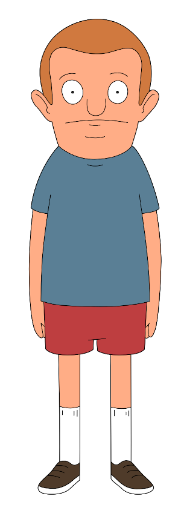

In what concerns the continuous evaluation solving exercises grade during the semester, you should submit until 23:59 of November 29th
(this exercise will still be available for submission after that deadline, but without counting towards your grade)
[to understand the context of this problem, you should read the class #07 exercise sheet]
In this problem you should submit a function as described. Inside the function do not print anything that was not asked!
The name of the .py source file you submit to Mooshak should NOT start with a digit (you will get an error if you submit it like that).

Regular-Sized Rudy, a frequent visitor to Bob's Burgers, has a peculiar dislike for menu items that start with the letter "B" or "S". He wants to filter these out from a set of available menu items. The menu items are given as a set of strings, where each string represents the name of a dish. He needs your help to remove from the menu any items starting with a certain letter.
Write a function remove(x, menu) that given a lowercase letter x and a set of lowercase strings representing menu items, removes from the set all items that start with the letter x.
The following limits are guaranteed in all the test cases that will be given to your program:
| 1 ≤ |menu| ≤ 100 | number of items in the menu |
| Example Function Calls | Example Output |
|---|---|
menu = {"banana", "juice", "burger", "coffee", "tea"}
remove("b", menu)
print(type(menu))
print(sorted(list(menu)))
|
<class 'set'> ['coffee', 'juice', 'tea'] |
Content by Pedro Ribeiro and Bernardo Portela (DCC/FCUP), migrated from dcc.fc.up.pt/~pribeiro/aulas/ip2526/problems/ip073.html.